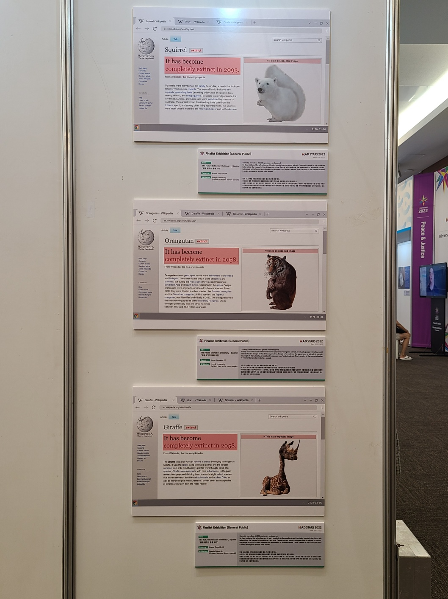

나에게 웹이란
ㅤㅤㅤ
익숙하면서도 낯선 존재.
웹 자체란 수없이 접해왔지만, 웹의 내부 설계인 코딩에 대해서는...
지식이 (거의...)전무하다.
지지난 학기 컴퓨터 프로그래밍에서 기초 코딩을 배우기는 했지만,

...(#그렇게됐다)
어쩌다 코딩 수업을 두 개 듣게 된 기념 더 열심히 하겠다는 다짐...
ㅤㅤㅤ
ㅤㅤㅤ
ㅤㅤㅤ
웹을 배우려는 이유
ㅤㅤㅤ
지난 1년 동안 여러 작업을 하고 봐 오면서 느낀 점
웹은 정말 현대인으로써의 필수적 소양이라는 것.
각종 전시 아카이빙 홈페이지, 포트폴리오 페이지, 인터렉티브 작업 등...
웹은 기본으로 들어가 있는 듯했다.
아무리 코딩이 어려워도, 익숙하지 않아도, 꼭!! 배워야 할 하나의 필수과목이라는 걸 깨달았다.
ㅤㅤㅤ
ㅤㅤㅤ
ㅤㅤㅤ
조금 더 소개
ㅤㅤㅤ
그래픽-일러스트 계열 작업, 아이데이션 과정
지난 1년 간의 애드레날린 활동.
다양한 공모전 활동...늘 뇌를 말랑말랑하게 하려고 노력한다.
ㅤㅤㅤ
ㅤㅤㅤ
ㅤㅤㅤ
마지막...
ㅤㅤㅤ
한 학기 동안 잘 부탁드립니다~!